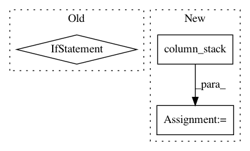

5016a008790087d9cb47e7f91099f3dba7960ee2,mlxtend/regressor/stacking_cv_regression.py,StackingCVRegressor,fit,#StackingCVRegressor#Any#Any#Any#Any#,119
Before Change
//
for train_idx, holdout_idx in kfold.split(X, y, groups):
instance = clone(regr)
if sample_weight is None:
instance.fit(X[train_idx], y[train_idx])
else:
instance.fit(X[train_idx], y[train_idx],
sample_weight=sample_weight[train_idx])
y_pred = instance.predict(X[holdout_idx])
meta_features[holdout_idx, i] = y_pred
// save meta-features for training data
After Change
fit_params = None
else:
fit_params = dict(sample_weight=sample_weight)
meta_features = np.column_stack([cross_val_predict(
regr, X, y, groups=groups, cv=kfold,
n_jobs=self.n_jobs, fit_params=fit_params,
pre_dispatch=self.pre_dispatch)
for regr in self.regr_])
// save meta-features for training data
if self.store_train_meta_features:
self.train_meta_features_ = meta_features
In pattern: SUPERPATTERN
Frequency: 4
Non-data size: 3
Instances
Project Name: rasbt/mlxtend
Commit Name: 5016a008790087d9cb47e7f91099f3dba7960ee2
Time: 2019-03-14
Author: 36086881+qiagu@users.noreply.github.com
File Name: mlxtend/regressor/stacking_cv_regression.py
Class Name: StackingCVRegressor
Method Name: fit
Project Name: SpiNNakerManchester/sPyNNaker
Commit Name: b2b4e260e8fd5784eb5ea2c13c7a3cc8e1cc9fc2
Time: 2017-12-18
Author: christian.brenninkmeijer@manchester.ac.uk
File Name: spynnaker/pyNN/models/recording_common.py
Class Name: RecordingCommon
Method Name: pynn7_format
Project Name: scipy/scipy
Commit Name: bd72f63f3342bc88cd941bbc41547d6513e089ea
Time: 2018-08-13
Author: pvanmulbregt@users.noreply.github.com
File Name: scipy/special/tests/test_kolmogorov.py
Class Name: TestSmirnovi
Method Name: test_n_equals_1
Project Name: bashtage/linearmodels
Commit Name: eb47d0eacbb3e3bad905616f8d410ebff8b6a1a9
Time: 2019-03-21
Author: kevin.k.sheppard@gmail.com
File Name: linearmodels/panel/model.py
Class Name: PanelOLS
Method Name: _lsmr_path